Kuvaajien ehdoilla
Retken rytmi määräytyy kuvaamisen tarpeiden mukaan, ei valmiin aikataulun ehdoilla.
Saavutettavat saaristoretket Turun saaristossa
Erityisryhmien retket ja valokuvausretket — saaristo kuuluu kaikille
Ota yhteyttäAccessible Archipelago tarjoaa saavutettavia veneretkiä Turun upeassa saaristossa. Venellämme on ramppi, joka mahdollistaa helpon pääsyn kaikille — myös pyörätuolin käyttäjille ja liikuntarajoitteisille.
Vene vie sinut sinne, minne haluat. Suunnittelemme reitin yhdessä toiveidesi mukaan. Saaristo tarjoaa ainutlaatuisia luontokokemuksia, hiljaisia lahtia ja henkeäsalpaavia maisemia.
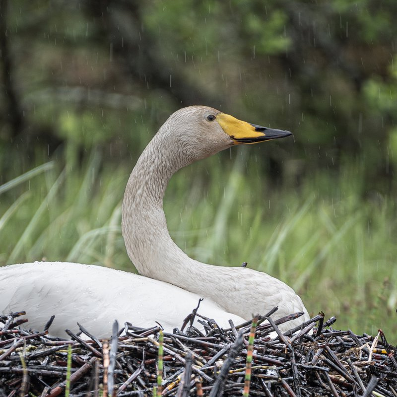
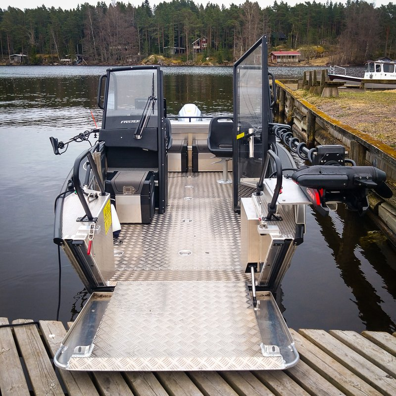
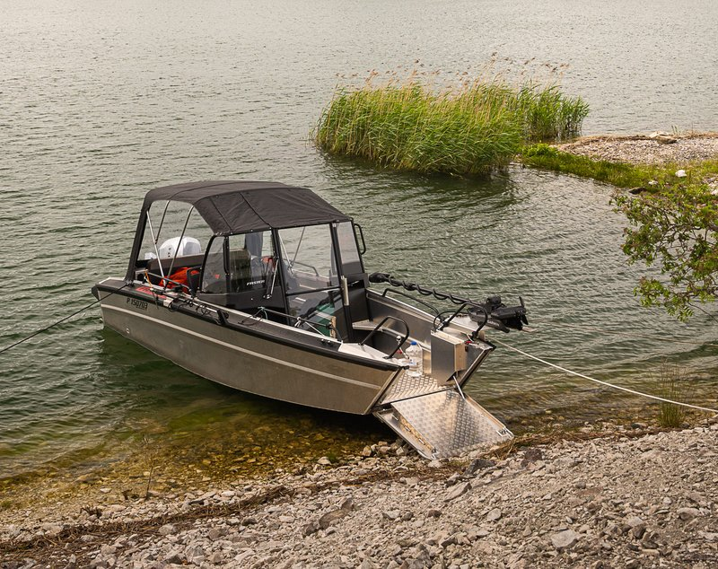
Tarjoamme räätälöityjä veneretkiä erityisryhmille. Venellämme on hydraulinen ramppi, joka tekee veneeseen nousemisesta ja poistumisesta helppoa ja turvallista kaikille.
Hydraulinen ramppi ja tilava kansi pyörätuolille.
Suunnittelemme reitin yhdessä toiveidesi mukaan.
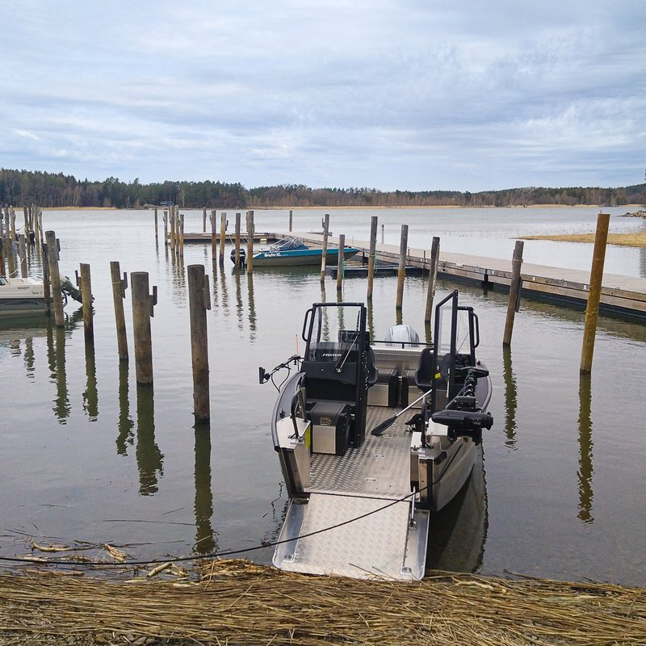
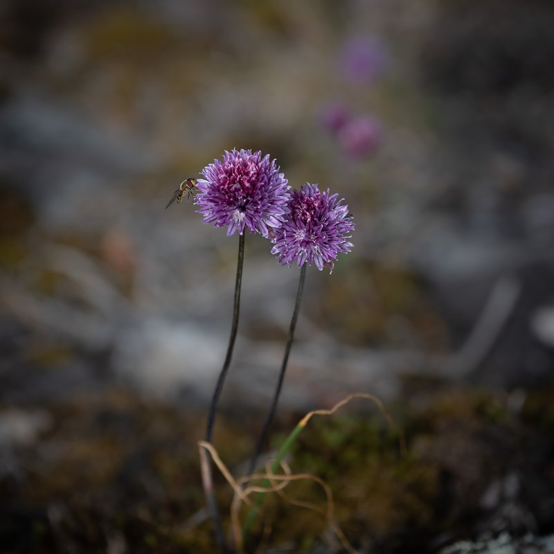
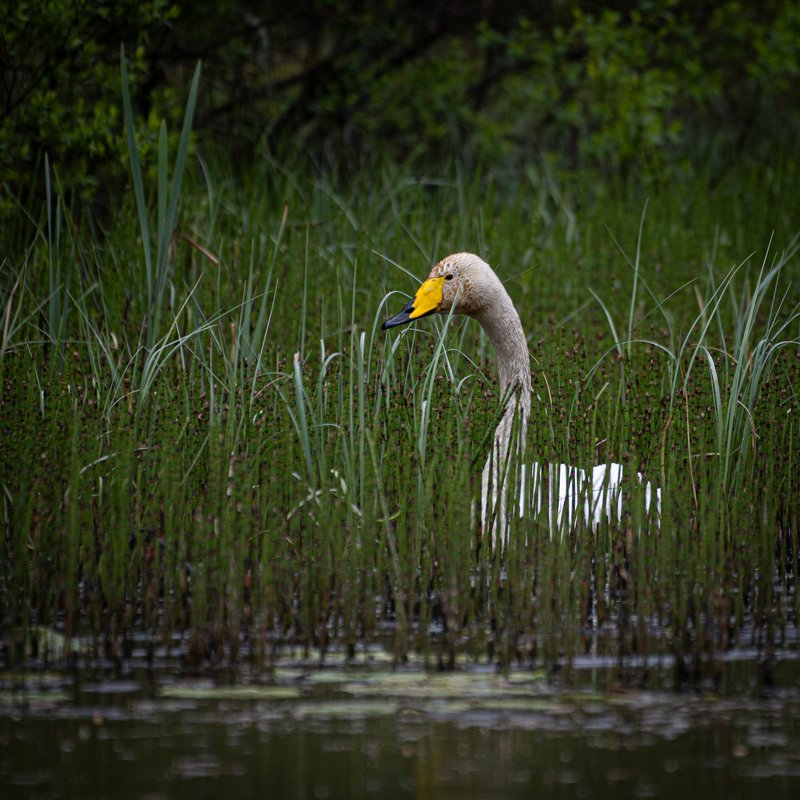
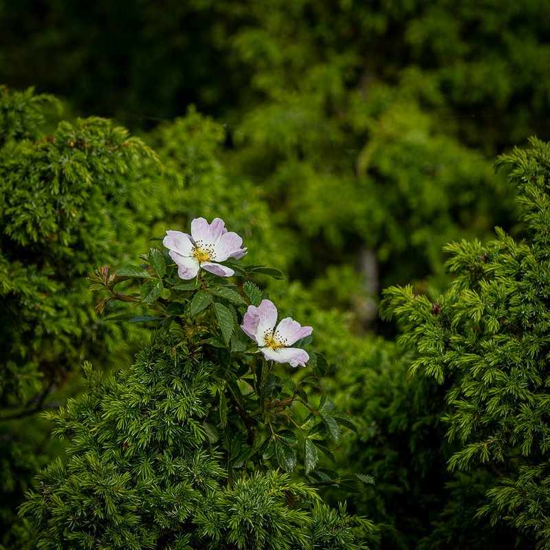
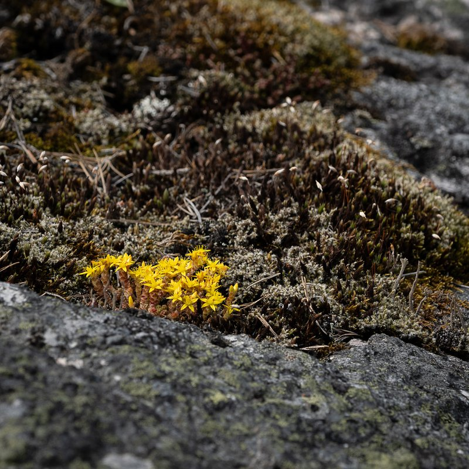
Jokainen retki räätälöidään toiveidesi mukaan. Hinta riippuu retken kestosta, reitistä ja ryhmän koosta. Ota yhteyttä, niin suunnitellaan juuri sinulle sopiva retki.
Kysy tarjousValokuvausretket on suunniteltu luonnon kuvaamiseen valokuvaajien ehdoilla. Etenemme valon, sään, vuodenaikojen ja kohteiden mukaan, jotta saat parhaat mahdolliset olosuhteet kuvaamiseen.
Retken rytmi määräytyy kuvaamisen tarpeiden mukaan, ei valmiin aikataulun ehdoilla.
Hyödynnämme kultaisen tunnin, sään vaihtelut ja oikean kuvausajankohdan jokaisessa kohteessa.
Kuvauskohteina voivat olla esimerkiksi linnut, hylkeet, merimaisemat ja saariston yksityiskohdat.
Retki toteutetaan rauhallisesti, jotta voit keskittyä sommitteluun, odottamiseen ja oikean hetken löytämiseen.
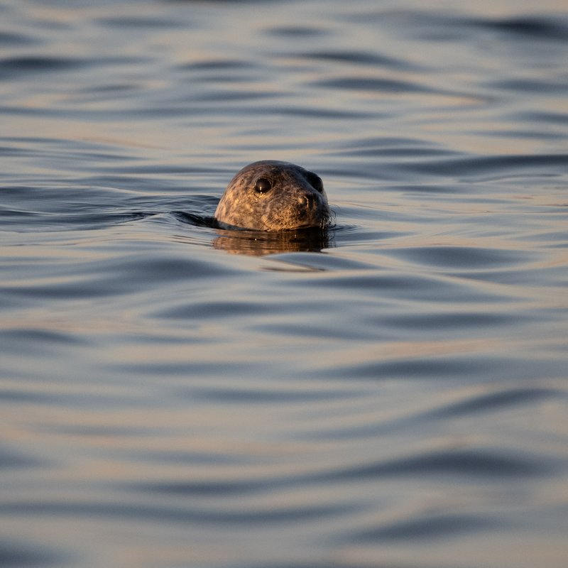
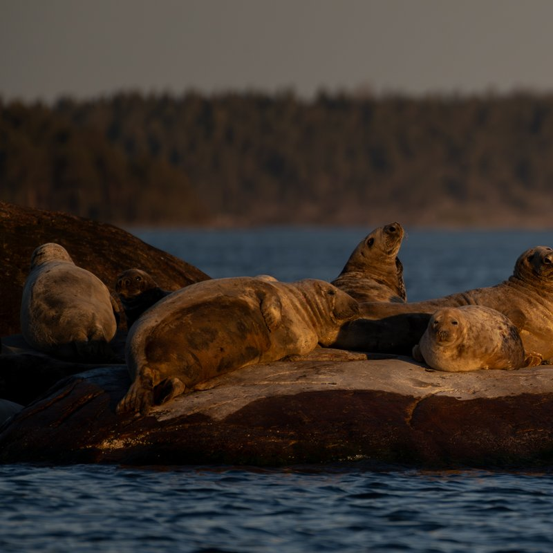
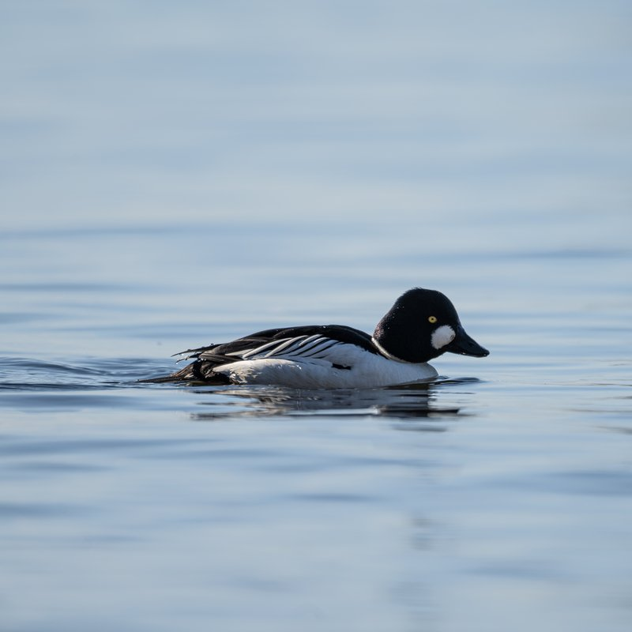
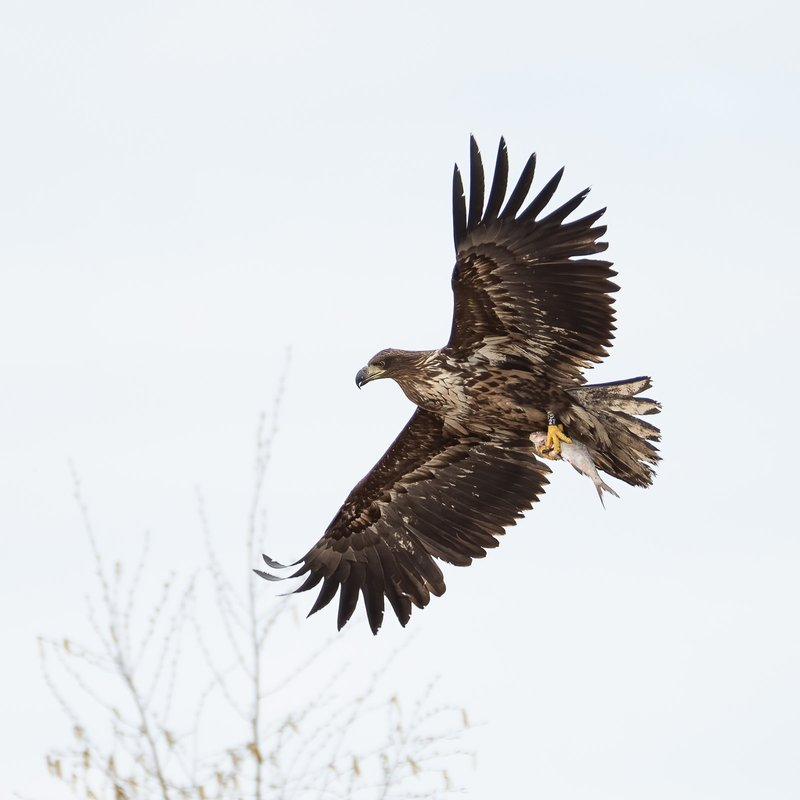
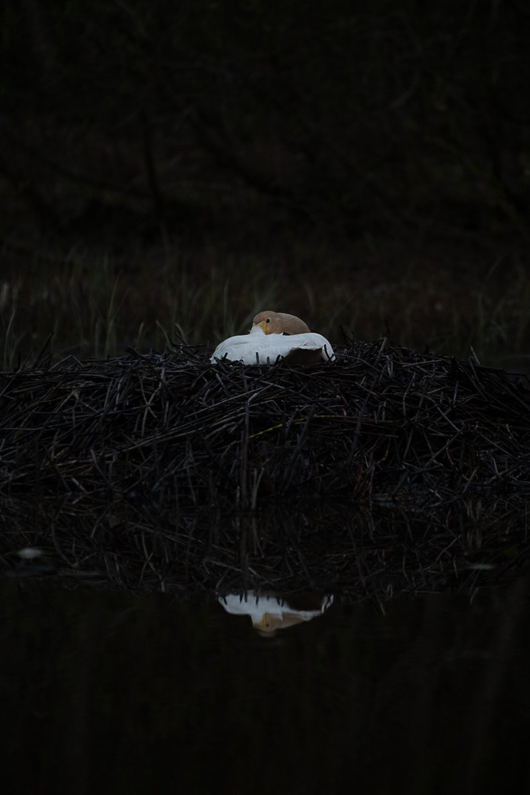
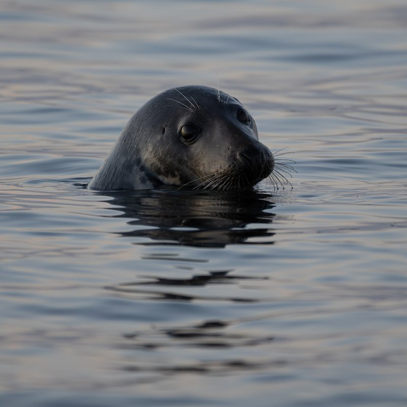
Lähde kuvaamaan saariston upeaa auringonlaskua. Retki suunnitellaan valon ja sääolosuhteiden mukaan, jotta saat parhaat mahdolliset kuvat kultaisella tunnilla. Vene vie sinut parhaille kuvauspaikoille saariston rauhaan. Retki toteutetaan sään salliessa — huonon sään sattuessa sovimme uuden ajankohdan.
Minimiosallistujamäärä 2 henkilöä.
Valokuvausretki räätälöidään kuvauskohteiden, toiveidesi ja olosuhteiden mukaan. Hinta riippuu retken kestosta, reitistä ja ryhmän koosta. Ota yhteyttä ja kerro, mitä haluat kuvata luonnossa.
Kysy tarjousOta yhteyttä ja suunnitellaan sinulle unelmaretki saaristoon!